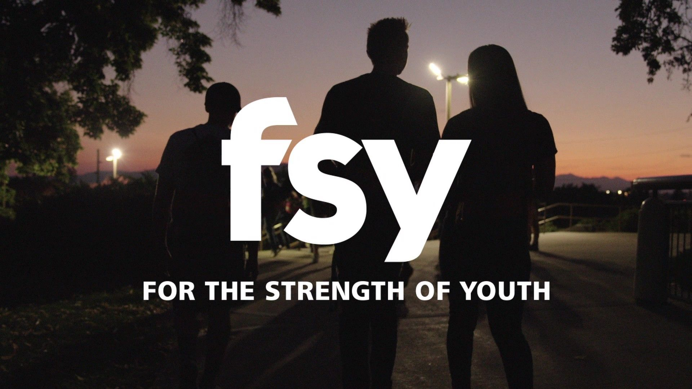

For the Strength of Youth is a 5 days and 5 nights activity where you and other youth could RECONNECT, REKINDLE, AND DEEPEN your understanding and knowledge about Jesus Christ and His Gospel. 
There will be activities and devotionals that can help you in your daily lives. Included are games, dance socials, musical events, talent show-case variety show that will help you boost and develop your confidence in meeting new people and show the talents you have.
You will be given a Participant Handbook that can guide you throughout your stay and at the same
time where you can record your thoughts and your feelings.

You will be given a time where you can have your
own
personal study and embody the importance of the reading, praying and pondering on the scriptures.
 Here are the standards you are to abide in when in the For the Strength of Youth
Activity
Here are the standards you are to abide in when in the For the Strength of Youth
Activity
Below is a video that can help you understand more about For the Strength of Youth Activity.